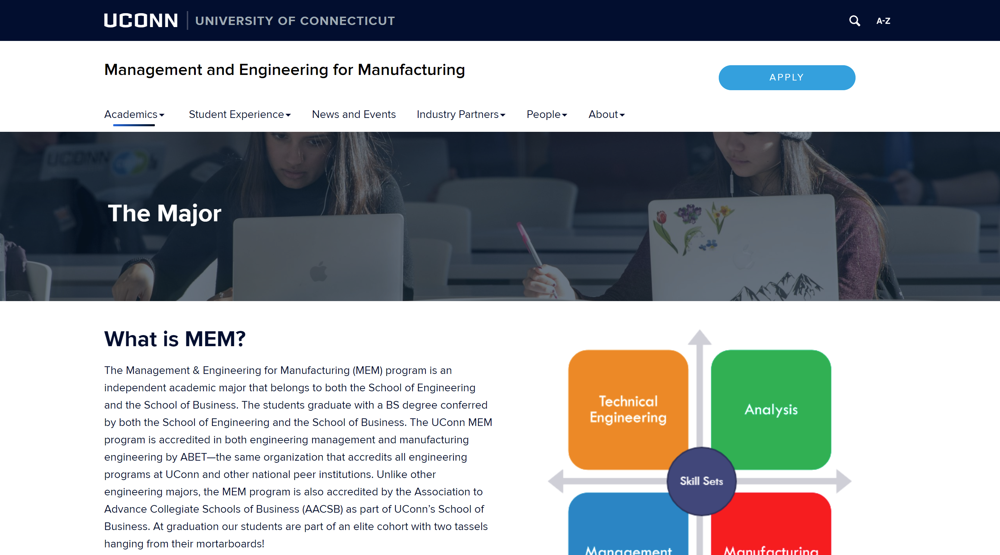
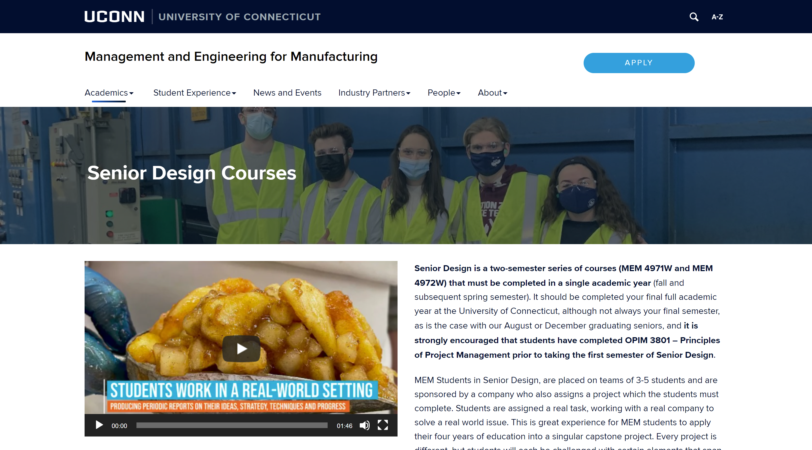

Working as a Web Design and Development Specialist, I worked with the director of the MEM program to create a website in UConn Aurora WordPress. I did everything from creating a sitemap, mocking up webpages, and then implementing my designs into code with WordPress Pagebuilder and using custom CSS.

All pages created are fully responsive on all screen sizes


There are many different subpages in the nav. These are two examples of subpages created.

The Student Experience page functions as a landing page where the user can click to subsequent subpages.